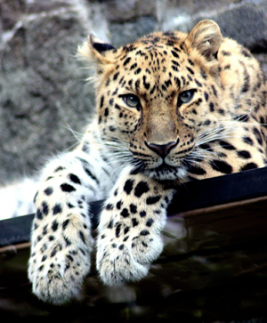

Léopard de l'Amour
La panthère de l’Amour diffère des autres sous-espèces par une épaisse fourrure tachetée qui ne ressemble à aucune autre. Le pelage des panthères du bassin de la rivière Amour, des montagnes du nord-est de la Chine et de la péninsule Coréenne est de couleur crème, surtout en hiver. Les rosettes des flancs sont de 5 cm × 5 cm, elles sont épaisses et bien espacées, les cercles sont épais et plus foncés au centre.
Leur pelage est doux et leur fourrure est longue et épaisse. La longueur des poils du dos varie de 20-25 mm en été et jusqu’à 50 mm en hiver. Leur pelage d’hiver varie d’un jaune clair à un jaune-roux teinté de doré. Leur pelage d’été est plus brillant et les rosettes sont d’une couleur plus vive. Les panthères de l’Amour sont assez petites, les mâles mesurent entre 107 et 136 cm, avec une longueur de queue de 82 à 90 cm et une hauteur de 64 à 78 cm. Ils pèsent entre 32,2 et 48 kg et les femelles entre 25 et 42,5 kg.
Hermann Schlegel fut le premier explorateur à découvrir ces animaux en 1857. Ils couvraient alors un large territoire d’environ 3 000 km2 comprenant la frontière entre la Chine et la Corée du Nord.
Lien vers la page Wikipédia pour le terme : Léopard de L'Amour